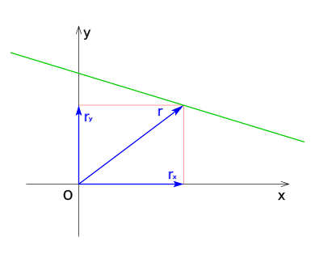

Movimiento rectilíneo
En física, un movimiento es rectilíneo uniforme cuando un «objeto» (por ejemplo) viaja en una trayectoria recta a una velocidad constante,1 dado que su aceleración es nula.2
El movimiento rectilíneo uniforme se designa frecuentemente con el acrónimo MRU, aunque en algunos países se denomina como MRC, por movimiento rectilíneo constante
Comportamiento del movimiento[editar]
El MRU se caracteriza por:
Movimiento que se realiza sobre una línea recta.
Velocidad constante; implica magnitud y dirección constantes.
La magnitud de la velocidad recibe el nombre de celeridad o rapidez sin aceleración.
Para este tipo de movimiento, la distancia recorrida se calcula multiplicando la magnitud de la velocidad por el tiempo transcurrido. Esta relación también es aplicable si la trayectoria no es rectilínea, con tal que la rapidez o módulo de la velocidad sea constante. Por lo tanto, el movimiento puede considerarse en dos sentidos; una velocidad negativa representa un movimiento en dirección contraria al sentido que convencionalmente hayamos adoptado como positivo.
De acuerdo con la Primera Ley de Newton, toda partícula puntual permanece en reposo o en movimiento rectilíneo uniforme cuando no hay una fuerza externa que actúe sobre el cuerpo, dado que las fuerzas actuales están en equilibrio, por lo cual su estado es de reposo o de movimiento rectilíneo uniforme. Esta es una situación ideal, ya que siempre existen fuerzas que tienden a alterar el movimiento de las partículas, por lo que en el movimiento rectilíneo uniforme (MRU) es difícil encontrar la fuerza amplificada.
Representación gráfica del movimiento[editar]
Una peculiaridad interesante de la trayectoria rectilínea, es que el problema admite una descripción unidimensional mediante una única coordenada, aunque estemos estudiando una trayectoria en tres dimensiones. Para ello basta escoger un punto sobre la trayectoria P y una función «distancia» al dicho punto d (será un número real, positivo para uno de los dos sentidos y negativo para el sentido opuesto), tomando el vector director unitario de la recta � existen dos elecciones posibles de este vector, cualquiera
